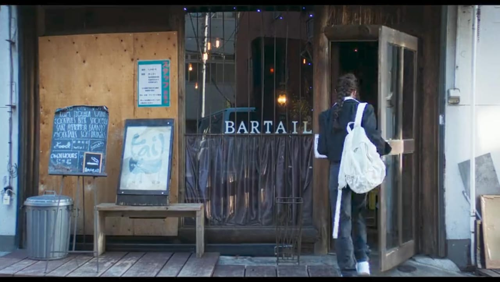
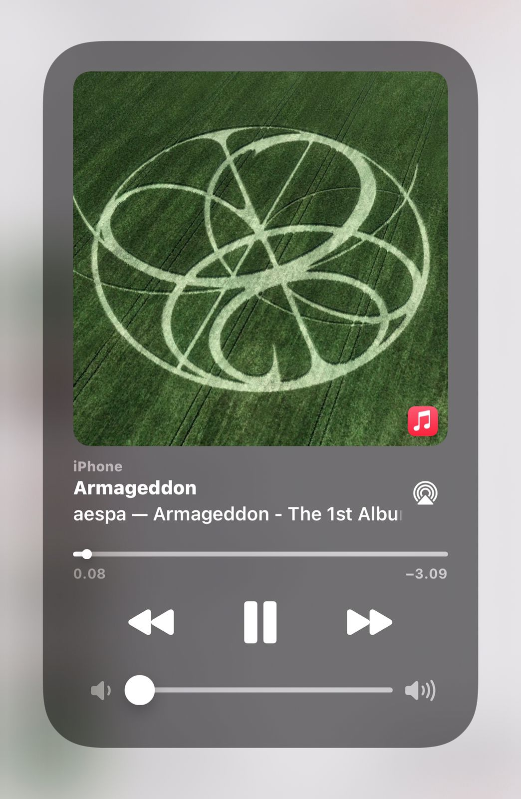

블룸이 좋아하는 노래, 좋아하는 밴드, 블룸의 꿈, 블룸이 좋아하는 드라마와 영화, 블룸에 대한 모든 것 등 블룸이 좋아하는 것을 알 수 있는 웹사이트입니다. 궁금하다면 이 웹사이트를 계속 팔로우하세요.🫶🏻
that BLUME currently watching title : 사랑 후에 오는 것들
“이세영과 사카구치 켄타로가 주연을 맡은 K-드라마 '사랑 후에 오는 것'입니다. 이 드라마는 실연을 경험한 여자와 사랑의 의미를 재발견하도록 도와주려는 남자, 두 주인공의 관계에 대한 이야기입니다. 이세영은 극 중 끝난 관계에서 벗어나기 위해 고군분투하는 여자를 연기합니다. 반면 사카구치 켄타로는 자신만의 과거가 있지만 여자를 돕고 싶어하는 남자 역을 맡았다.
이 드라마는 잃어버린 사랑과 수용, 그리고 아픔을 겪은 후 어떻게 행복을 재발견할 수 있는지에 대한 주제를 탐구합니다. 두 캐릭터의 상호 작용은 깊고 감정적인 역학을 만들어냅니다. 이야기가 진행됨에 따라 두 사람의 관계는 우정에서 더 깊은 관계로 발전하고, 각 캐릭터는 자신의 과거를 마주하고 새로운 사랑의 가능성에 자신을 개방하는 법을 배웁니다. 이 드라마는 사랑과 상실에 대한 관객의 감정을 불러일으키는 성찰적인 순간과 함께 깊은 감동을 선사합니다. 더 자세히 알고 싶은 부분이 있다면 알려주세요!
frequently played songs
